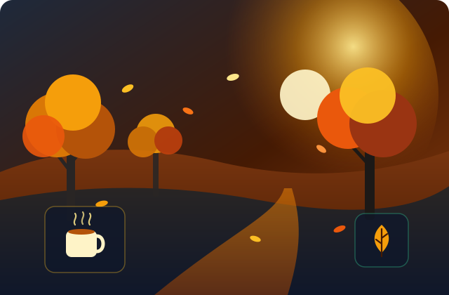

Falling for Autumn & Verb Patterns
Today we connect late-autumn language, natural weather idioms, and a focused verb-pattern workout built directly from your Normandy review: mastering recommend + -ing and suggest + -ing so they flow automatically when you speak and write.

Step 1 · Active Speaking Warm-Up (2-Minute Long Turn)
Start with your speaking voice first: 1 minute to jot down 4 trigger words, then 2 minutes of natural spoken flow.
Describe your favourite time of year, or an autumn trip or weekend activity you really enjoyed.
- where you were or what this time of year looks and feels like
- how the changing daylight and weather affect your daily routine
- what seasonal food, markets, or indoor/outdoor activities you enjoy most
- and explain what you would recommend doing or visiting at this time of year.
Step 2 · First Signs of Autumn (ESL Brains Exercise 1)
Match each everyday autumn phrase with its concrete example, then complete the letters and discuss.
Part 1 · Match the Phrases in Bold (A–H) with Examples (1–8)
Part 2 · Complete the Missing Letters & Answer the Questions
Step 3 · Weather-Related Idioms & Video Check (ESL Brains Exercise 2)
Choose the natural idiom word and match its meaning, watch the short clip to check, then share real examples.
Check Your Answers in Context
Watch the short montage of film and series clips to hear each weather idiom spoken naturally, paying attention to sentence stress on rain check, cloud nine, and right as rain.
Part 3 · Spoken Practice: Share Details & Ask a Follow-Up Question
Pick any prompt card, share a real moment in detail, then ask a follow-up question. Click a card to mark it discussed.
Step 4 · Personalised Clinic: Mastering Recommend & Suggest
Targeted practice built directly from your Bochum letter (suggest) and your Normandy review (recommend).
1. General Action (-ing)
•
•
2. With a Specific Person
• I recommend (that) you visit Mont-Saint-Michel in autumn.
• Or switch verb: I advised my friend to book early.
3. With a Noun / Thing
• Can you recommend a good seafood bistro in Deauville?
4. Contrast with Infinitive Verbs
• + to do: advise someone to, plan to, want to, decide to, manage to
5-Item Live Repair & Speaking Transfer Workout
Step 5 · Autumn Plans, Likes & Habits (ESL Brains Exercise 3)
Part 1: Find the path from hate to don't mind stepping only on verbs followed by a gerund (-ing). Move up, down, left, or right.
hate → avoid → can't stand → miss → admit → love → imagine → practise → finish → suggest → keep → don't mind.
Infinitive-only traps avoided: promise, decide, want, plan, choose, need, learn, manage (+ to do).
Part 2 · Complete the Gaps with the Correct Verb Form & Say If True for You
Step 6 · Autumn Activities & “Yes, but…” Debate (ESL Brains Exercise 4)
Complete sentences A–H from the word bank, then practise quick counterarguments starting with “Yes, but…”.
Part 1 · Word Bank Gap-Fill
Parts 2 & 3 · “Yes, but…” Counterargument Ping-Pong & Your Autumn Picks
Step 7 · Today’s Live Scratchpad (18 Nov 2026)
Everything we captured live during today’s verb-pattern and gerund-maze session. Sections 2, 3, and 6 (Signs of Autumn, Weather Idioms, and Autumn Activities) remain ready whenever you want to explore them next!
• “I can’t stand cleaning my kitchen when someone else made the mess.”
• “…walking into my kitchen and it’s a mess in the morning!”
Question: “How well done do you like your lamb?” → rare / medium rare / well done.
hate + being + V3 (when others do it to her).Example: “My daughter hates being interrupted” • very methodical.
Plural possessive
friends’ puts the apostrophe after the -s.
Contrasted with rigid, fixed plans (and questioning national stereotypes).
• “I admit that I want a new car.”
• “He admitted stealing the money.”
staycation: A relaxing break spent at home rather than travelling abroad.
2. + -ing: “I imagine staying in a French château would be amazing.” / “I imagine having…”
• “My friend suggested getting plastic surgery.”
• an acquaintance (has a pizza restaurant) • aftercare.
• “I don’t mind my husband leaving for a business trip for three months.”
• extended family (= stressful!).
/kləʊz/, 1 syllable) vs “He closes the door” (2 syllables).Question: “Why haven’t you switched on the heating yet?”
• I am used to this / living here: Normal for me now.
• “The grass is always greener on the other side.”